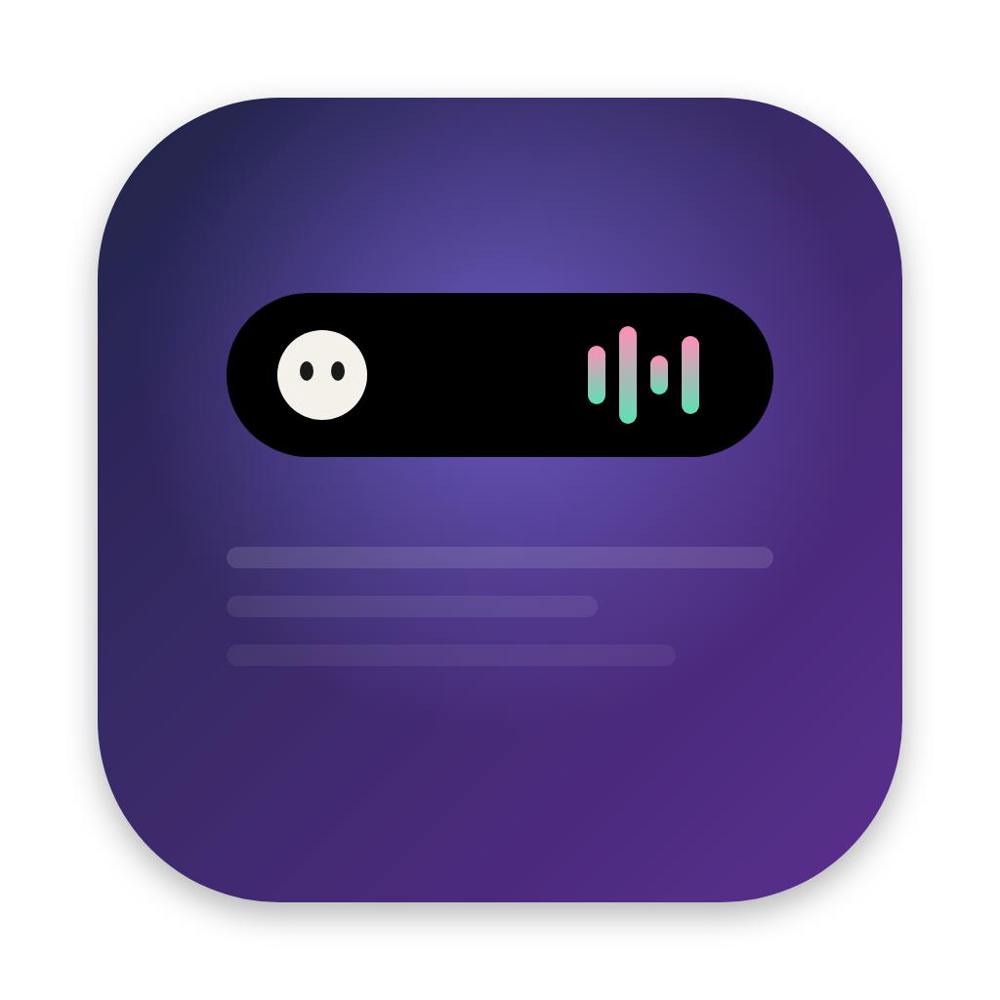

DynaIslandArea hitam di sekitar kamera jadi hidup: musik dari semua app, maskot yang lucu, jadwal sholat, meeting, Shelf + AirDrop, dan riwayat clipboard. Gratis.
curl -fsSL https://raw.githubusercontent.com/barisbaru19-ux/dynaisland/main/install.sh | bash
Gratis · macOS 12 ke atas · Apple Silicon & Intel · paling bagus di MacBook dengan notch
Klik tombol Salin di atas.
Tekan ⌘ + Space, ketik Terminal, lalu tekan Enter.
Tekan ⌘ + V, lalu Enter. Beberapa detik kemudian DynaIsland terbuka dan menyambutmu.
YouTube di browser, Spotify, Apple Music, Podcasts, VLC. Cover, judul, dan tombol kontrol.
Moci, Kucing, atau Bit. Berjoget saat musik, tidur saat Mac didiamkan, menyapa saat island dibuka.
Hitung mundur 10 menit sebelum waktunya, parameter Kemenag, 25 kota, tanpa internet.
Hitung mundur dari app Calendar dan tombol Gabung untuk Zoom, Meet, Teams.
Seret file ke notch. Download dan screenshot baru langsung masuk. Seret keluar atau AirDrop.
20 teks dan gambar terakhir. ⌃⌥V, klik, tempel. Password tidak dicatat.
Nama perangkat dan baterainya muncul saat tersambung, seperti di iPhone.
15–60 menit, istirahat 5 menit otomatis, ring progres di samping kamera.
Satu pop-up volume yang rapi. Geser dua jari untuk ganti lagu atau atur volume.
Semua kodenya terbuka di GitHub dan app-nya di-build otomatis dari kode itu. Isi clipboard, kalender, dan file kamu tidak pernah keluar dari Mac. App ini hanya memakai internet untuk mengecek versi baru dan mengambil cover lagu.
Kalau di-download lewat browser, WhatsApp, atau AirDrop, macOS menandai app yang tidak dijual lewat App Store sebagai "damaged". Lewat Terminal app langsung terpasang tanpa peringatan itu. Cukup sekali, karena update berikutnya berjalan otomatis.
Tetap bisa. Island jadi pil hitam kecil di tengah menu bar, dan semua fiturnya sama.
Otomatis saat Mac tidak dipakai. Atau klik ikon DynaIsland di menu bar, lalu pilih Perbarui DynaIsland….
Semua opsional dan ditanyakan satu per satu di layar sambutan: Kalender (meeting), folder Downloads dan Desktop (Shelf otomatis), Aksesibilitas (pop-up volume), Bluetooth (AirPods), dan kontrol musik. Izin cukup diberikan sekali.
Buka ikon DynaIsland di menu bar, pilih Laporkan masalah…, lalu klik "Salin untuk WhatsApp" atau "Kirim lewat GitHub".
Tempel ini di Terminal:
curl -fsSL https://raw.githubusercontent.com/barisbaru19-ux/dynaisland/main/install.sh | bash -s -- --uninstall